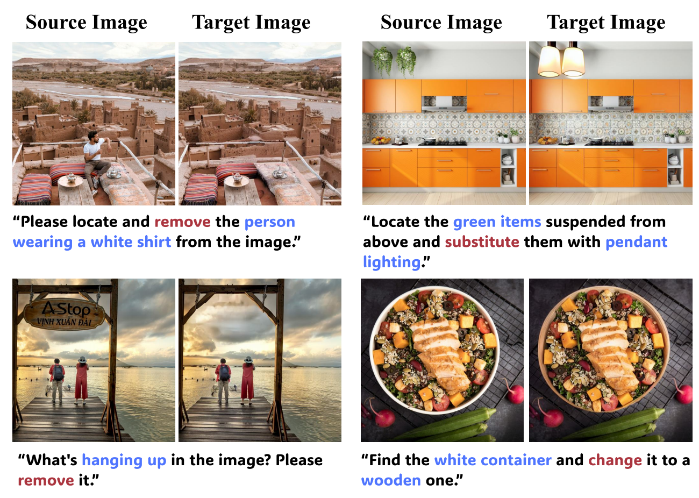
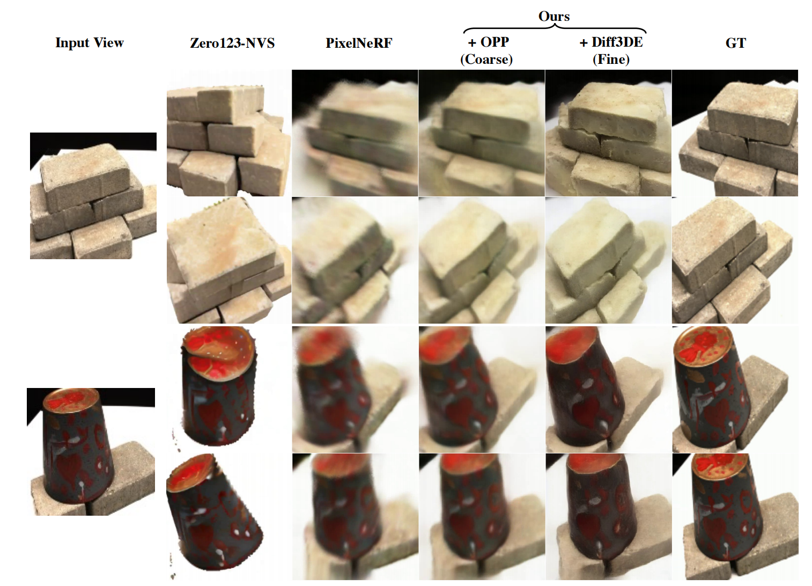
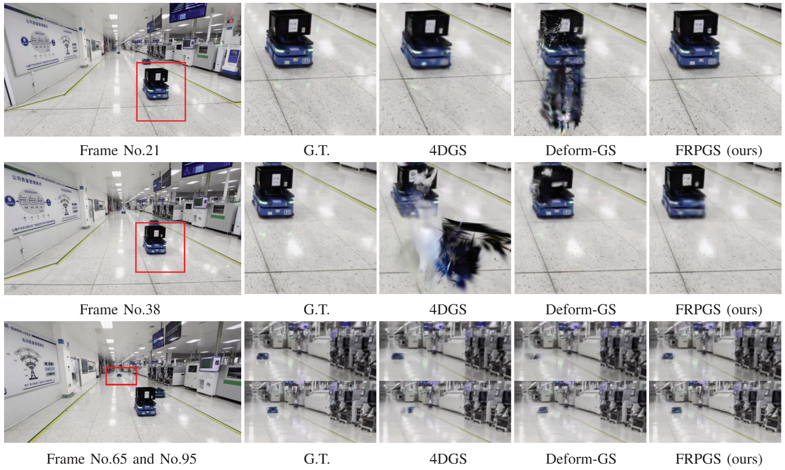
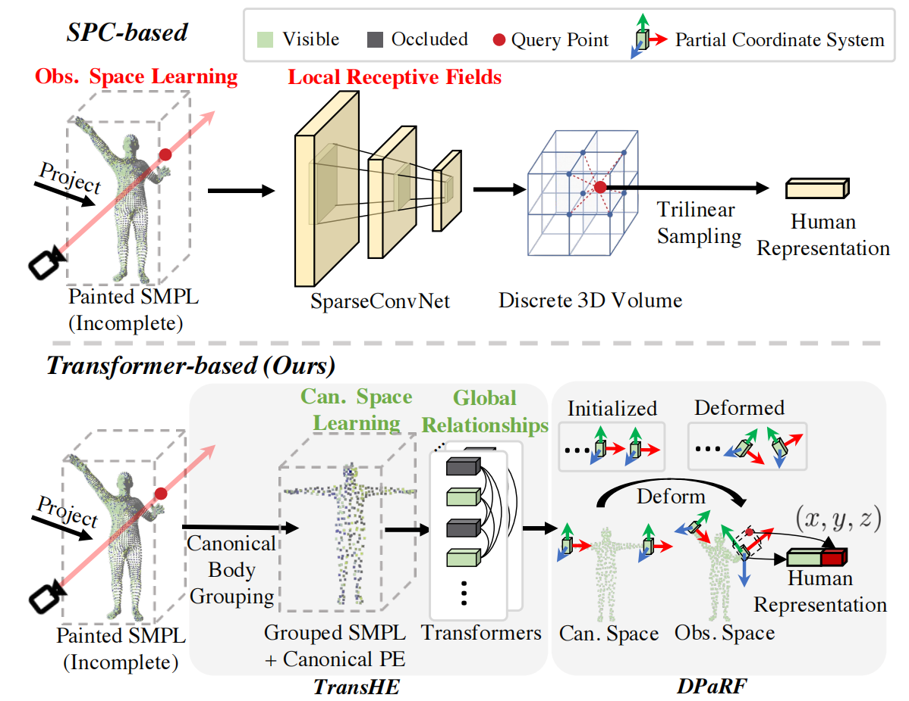
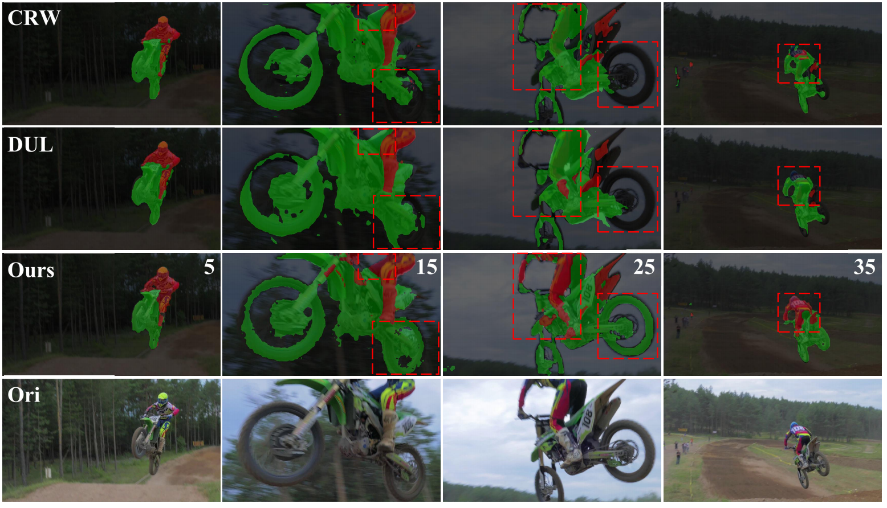

Xiao Pan is currently an Assistant Professor in the College of Electronics and Information Engineering at Shenzhen University (深圳大学, 丁文华院士团队). He received his Ph.D. in Artificial Intelligence from Zhejiang University in 2025, under the supervision of Prof. Yi Yang.
He previously served as a research intern in the Foundation Model Group at Alibaba’s Tongyi Lab and a visiting scholar at Nanyang Technological University, Singapore.
He has been honored with prestigious awards such as the National Scholarship from Zhejiang University.
His primary research interests lie in 3D vision, multimodal learning, and AIGC. He has published 8 papers at top-tier international AI conferences and journals, with total Google Scholar citations 
🔥 News
- 2026.01: 🎉🎉 Joined Shenzhen University as an Assistant Professor.
📝 Publications

InsightEdit: Towards Better Instruction Following for Image Editing
Yingjing Xu, Jie Kong, Jiazhi Wang, Xiao Pan, Bo Lin, Qiang Liu

GD-NeRF: Generative Detail Compensation for One-shot Generalizable Neural Radiance Fields
Xiao Pan, Zongxin Yang, Shuai Bai, Yi Yang

Wan Li, Xiao Pan, Jiaxin Lin, Ping Lu, Daquan Feng, Wenzhe Shi

TransHuman: A Transformer-based Human Representation for Generalizable Neural Human Rendering
Xiao Pan, Zongxin Yang, Jianxin Ma, Chang Zhou, Yi Yang

In-n-out Generative Learning for Dense Unsupervised Video Segmentation
Xiao Pan, Peike Li, Zongxin Yang, Huiling Zhou, Chang Zhou, Hongxia Yang, Jingren Zhou, Yi Yang
-
PR 2023 Dynamic Gradient Reactivation for Backward Compatible Person Re-identification, Xiao Pan, Hao Luo, Weihua Chen, Fan Wang, Hao Li, Wei Jiang, Jianming Zhang, Jianyang Gu, Peike Li.
-
KBS 2022 SFGN: Representing Sequence with One Super Frame for Video Person Re-identification, Xiao Pan, Hao Luo, Wei Jiang, Jianming Zhang, Jianyang Gu, Peike Li.
-
KBS 2022 Dynamic Graph Transformer for 3D Object Detection, Siyuan Ren, Xiao Pan, Wenjie Zhao, Binling Nie, Bo Han.
🎖 Honors and Awards
- 2023.10, Academic Excellence Scholarship, School of Software Technology, Zhejiang University.
- 2022.10, National Scholarship, School of Software Technology, Zhejiang University.
- 2021.05, First Place, National College Student Art Exhibition, Chengdu, China.
📖 Educations
- 2021.09 - 2025.12, Ph.D. in Artificial Intelligence, School of Software Technology, Zhejiang University.
- 2019.09 - 2021.06, M.E. in Control Engineering, College of Control Science and Engineering, Zhejiang University.
- 2015.09 - 2019.06, B.E. in Automation (Control), College of Control Science and Engineering, Zhejiang University.
💻 Working Experience
- 2026.01 - Present, Assistant Professor, Shenzhen University, China.
- 2024.06 - 2025.06, Visiting Student, Nanyang Technological University, Singapore.
- 2021.06 - 2024.03, Research Intern, Alibaba Tongyi Lab (Foundation Model Group), China.
✉️ Hiring
The following positions are currently open for application:
- Postdoctoral Researcher: Seeking researchers in 3D reconstruction, understanding, and AIGC.
- Research Intern: Undergraduates interested in 3D vision and Multimodal AI are welcome.
- Master’s Students: Planning to admit one master’s student for Sept. 2026.